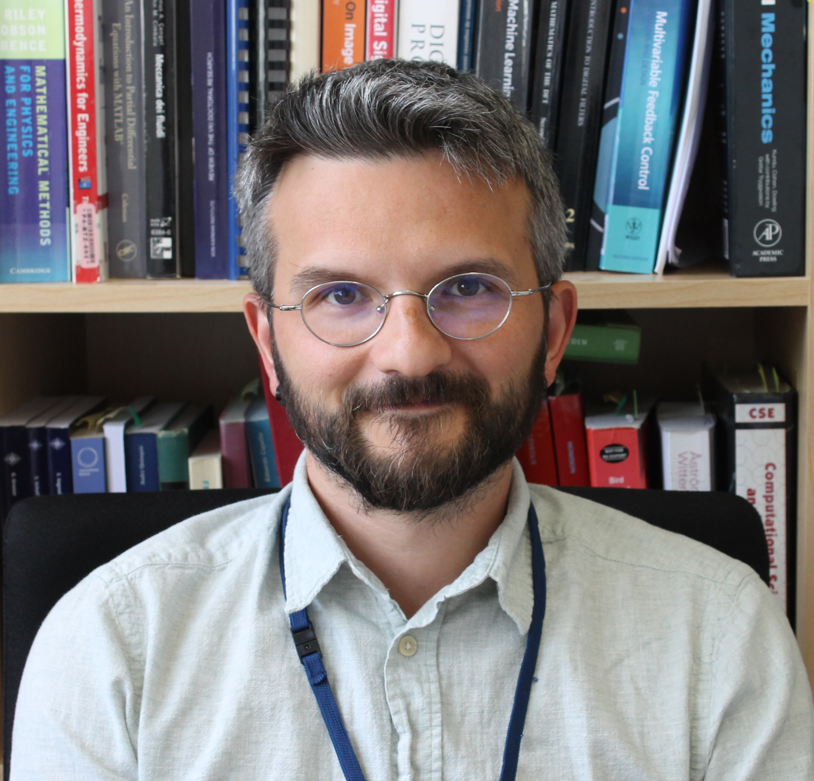

Home & News
SAAS (Service d'Automatique et d'Analyse des Systèmes), Brussels School of Engineering, ULB
Environmental and Applied Fluid Dynamics, von Karman Institute (VKI)
Department of Aerospace Engineering, Universidad Carlos III de Madrid (UC3M)

Hello! I am Miguel Alfonso Mendez. Since October 1st, 2026, my primary affiliation is the SAAS (Service d'Automatique et d'Analyse des Systèmes) Department at the Brussels School of Engineering, Université libre de Bruxelles (ULB; the department website is currently being updated). I am also Associate Professor at the von Karman Institute for Fluid Dynamics (VKI) and affiliated with the Department of Aerospace Engineering at Universidad Carlos III de Madrid (UC3M).
I lead the ML4F — Machine Learning for Fluid Systems group, which spans the three affiliations (SAAS–ULB, VKI and UC3M) and focuses on the development of hybrid physics–data methodologies for modeling, identification, and control of complex fluid and thermo-fluid systems. Core activities include data assimilation and digital twinning, reduced-order modeling, physics-informed and physics-constrained learning, and learning-based control, with strong links to experiments and real-time applications.
At ULB, I teach signal processing and data-driven engineering. At VKI, within the Institute’s postgraduate Research Master (Master-after-Master), I teach differential equations, signal processing, experimental methods, and machine learning applied to fluid dynamics. At UC3M, I give yearly mini-courses in the Doctoral Program on data assimilation, digital twinning, and control.
This website collects material related to our research and teaching activities, including courses, ongoing projects, events, publications, and opportunities for students and collaborators.
News
October 7th, 2026
New affiliation! As of October 1st, I have joined the SAAS (Service d'Automatique et d'Analyse des Systèmes) Department
at the Brussels School of Engineering, ULB. I am now affiliated with SAAS (ULB), the von Karman Institute (VKI)
and the Department of Aerospace Engineering at Universidad Carlos III de Madrid (UC3M).
July 23rd, 2026
Two papers are now published! "Predicting wind loads on container ships in harbour environments through multi-fidelity modelling" is out in
Ocean Engineering, and "A meshless data-tailored approach to compute statistics from scattered data with adaptive radial basis functions" is out in
Experiments in Fluids. See the Publications page for details.
March 6th, 2026
Event page updated! See announcements for three nice events in Paris, Berlin and Chania!
December 31st, 2025
A fresh restart! The website has been refreshed.
November 26th, 2025
The book from the lecture series in 2022 is out:
preview here
Last updated: October 7, 2026